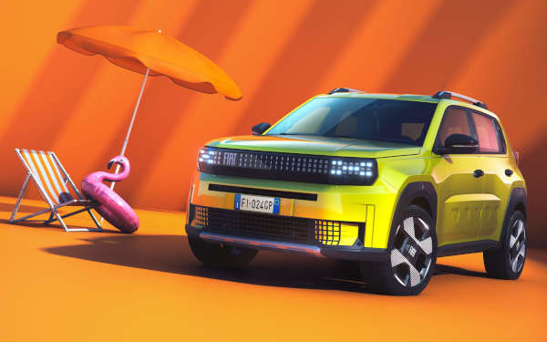
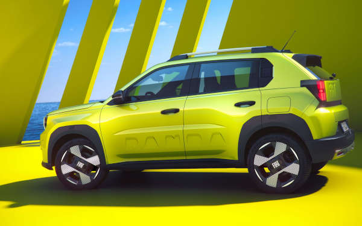
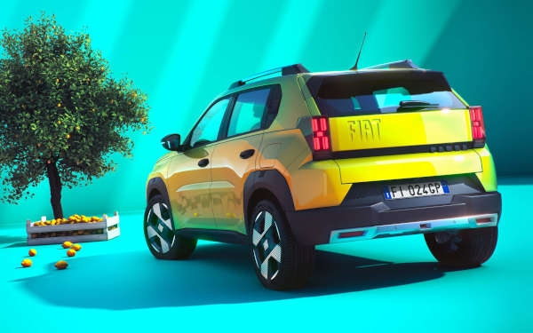

Em comemoração ao seu 125° aniversário, a Fiat revelou o Grande Panda, um modelo antecipa o sucessor do Fiat Argo no Brasil. O Grande Panda é o primeiro de uma nova geração de automóveis baseados na plataforma global Smart Car, que também é compartilhada com o Citroen C3.
"Este é um momento histórico para a Fiat, pois lançamos uma plataforma que define o futuro da mobilidade urbana e familiar em todo o mundo", exagerou Olivier François, CEO da Fiat e CMO Global da Stellantis, durante o evento de lançamento em Portela, Itália. "Com o Grande Panda, começamos a celebração de 125 anos da Fiat, introduzindo um modelo que encapsula a essência de nossa herança, mas com olhos firmemente fixados nas demandas futuras dos nossos clientes."
O Fiat Grande Panda se destaca por seu design compacto e funcional. Com 3,99 metros de comprimento, o carro foi projetado para o ambiente urbano, oferecendo uma combinação de estilo e praticidade. A nova estética do veículo incorpora uma frente robusta e uma traseira distintamente projetada, com faróis que refletem o design icônico da fábrica lingotto de Turim.
Além de seu visual arrojado, o Grande Panda foi projetado para ser um veículo gloval, adaptado para diversas regiões e capaz de atender a uma ampla gama de necessidades energéticas, graças à sua plataforma flexível Smart Car. O modelo é parte de um plano que inclui o lançamento de um novo carro a cada ano até 2027, visando revitalizar a gama da Fiat e consolidar sua presença no mercado global.
No Brasil, o lançamento do Fiat Grande Panda está previsto para até 2026, posicionando-se como um sucessor do Fiat Argo.